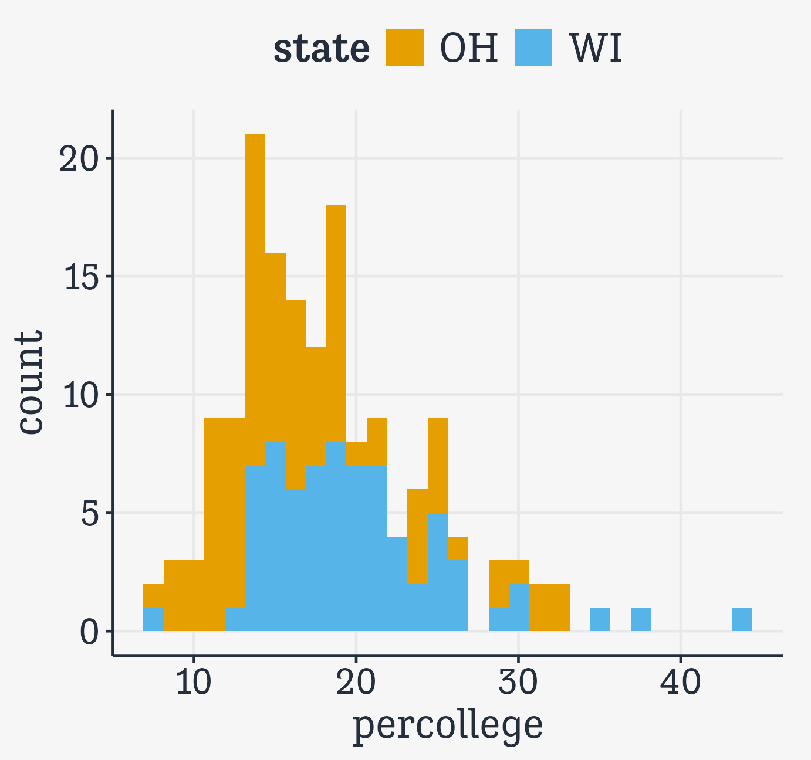

library(tidyverse) # Your friend and mine
library(gapminder) # Gapminder data
library(here) # Portable file paths
library(socviz) # Handy socviz functionsData Visualization - 4. Show the Right Numbers
Kieran Healy
Code Horizons
October 2024
Show the Right Numbers
Load the packages we need
ggplot implements a grammar of graphics
A grammar of graphics
The grammar is a set of rules for how to produce graphics from data, by mapping data to or representing it by geometric objects (like points and lines) that have aesthetic attributes (like position, color, size, and shape), together with further rules for transforming data if needed, for adjusting scales and their guides, and for projecting results onto some coordinate system.
Like other rules of syntax, the grammar
limits what you can validly say
but it doesn’t automatically make
what you say
sensible or meaningful
Grouped data and the group aesthetic
Try to make a lineplot
Try to make a lineplot
Try to make a lineplot
Try to make a lineplot
Try to make a lineplot
Try to make a lineplot

Try to make a lineplot

Facet the plot
# A tibble: 1,704 × 6
country continent year lifeExp pop gdpPercap
<fct> <fct> <int> <dbl> <int> <dbl>
1 Afghanistan Asia 1952 28.8 8425333 779.
2 Afghanistan Asia 1957 30.3 9240934 821.
3 Afghanistan Asia 1962 32.0 10267083 853.
4 Afghanistan Asia 1967 34.0 11537966 836.
5 Afghanistan Asia 1972 36.1 13079460 740.
6 Afghanistan Asia 1977 38.4 14880372 786.
7 Afghanistan Asia 1982 39.9 12881816 978.
8 Afghanistan Asia 1987 40.8 13867957 852.
9 Afghanistan Asia 1992 41.7 16317921 649.
10 Afghanistan Asia 1997 41.8 22227415 635.
# ℹ 1,694 more rowsFacet the plot

Facet the plot
Facet the plot
Faceting is very powerful
Faceting
- A facet is not a geom; it’s a way of arranging repeated geoms by some additional variable
- Facets use R’s “formula” syntax:
facet_wrap(~ continent) - Read the
~as “on” or “by”
Faceting
- You can also use this syntax:
facet_wrap(vars(continent)) - This is newer, and consistent with other ways of referring to variables within tidyverse functions.
Facets in action
p <- ggplot(data = gapminder,
mapping = aes(x = year,
y = gdpPercap))
p_out <- p + geom_line(color="gray70",
mapping=aes(group = country)) +
geom_smooth(size = 1.1,
method = "loess",
se = FALSE) +
scale_y_log10(labels=scales::label_dollar()) +
facet_wrap(~ continent, ncol = 5) +
labs(x = "Year",
y = "log GDP per capita",
title = "GDP per capita on Five Continents",
caption = "Data: Gapminder") 
One-variable summaries
The midwest dataset
- County-level census data for Midwestern U.S. Counties
# A tibble: 437 × 28
PID county state area poptotal popdensity popwhite popblack popamerindian
<int> <chr> <chr> <dbl> <int> <dbl> <int> <int> <int>
1 561 ADAMS IL 0.052 66090 1271. 63917 1702 98
2 562 ALEXAN… IL 0.014 10626 759 7054 3496 19
3 563 BOND IL 0.022 14991 681. 14477 429 35
4 564 BOONE IL 0.017 30806 1812. 29344 127 46
5 565 BROWN IL 0.018 5836 324. 5264 547 14
6 566 BUREAU IL 0.05 35688 714. 35157 50 65
7 567 CALHOUN IL 0.017 5322 313. 5298 1 8
8 568 CARROLL IL 0.027 16805 622. 16519 111 30
9 569 CASS IL 0.024 13437 560. 13384 16 8
10 570 CHAMPA… IL 0.058 173025 2983. 146506 16559 331
# ℹ 427 more rows
# ℹ 19 more variables: popasian <int>, popother <int>, percwhite <dbl>,
# percblack <dbl>, percamerindan <dbl>, percasian <dbl>, percother <dbl>,
# popadults <int>, perchsd <dbl>, percollege <dbl>, percprof <dbl>,
# poppovertyknown <int>, percpovertyknown <dbl>, percbelowpoverty <dbl>,
# percchildbelowpovert <dbl>, percadultpoverty <dbl>,
# percelderlypoverty <dbl>, inmetro <int>, category <chr>stat_ functions behind the scenes
`stat_bin()` using `bins = 30`. Pick better value with `binwidth`.
Here the default stat_ function for this geom has to make a choice. It is letting us know we might want to override it.
stat_ functions behind the scenes
- We can choose either the number of bins or the
binwidth
Compare two distributions

- Here we do the whole thing in a pipeline using the pipe and the
dplyrverbfilter()to subset rows of the data by some condition. - Experiment with changing the
positionargument to"dodge".
geom_density()
geom_density()
geom_density()
ndensityhere is computed. Histogram and density geoms have default statistics, but you can ask them to do more. Theafter_statfunctions can do this work for us.
Compare subgroups to a reference distribution
Some made-up data
- Consider 3,000 observations of some unit (e.g., a county) with summary measures for each group, and the mean weighted by subgroup population within unit.
# A tibble: 3,000 × 8
unit pop_a pop_b pop_c a_n b_n c_n pop_total
<int> <dbl> <dbl> <dbl> <int> <int> <int> <dbl>
1 1 0.251 0.579 0.632 40 2 45 0.456
2 2 0.376 0.300 0.445 7 29 6 0.333
3 3 0.326 0.693 0.511 36 49 13 0.534
4 4 0.349 0.596 0.566 37 10 40 0.477
5 5 0.294 0.410 0.320 13 12 35 0.332
6 6 0.259 0.297 0.583 48 49 44 0.373
7 7 0.316 0.574 0.457 19 15 36 0.444
8 8 0.344 0.552 0.537 10 13 49 0.513
9 9 0.441 0.580 0.818 19 45 43 0.651
10 10 0.264 0.388 0.630 11 25 10 0.411
# ℹ 2,990 more rowsGet the data into long format!
# A tibble: 3,000 × 8
unit pop_a pop_b pop_c a_n b_n c_n pop_total
<int> <dbl> <dbl> <dbl> <int> <int> <int> <dbl>
1 1 0.251 0.579 0.632 40 2 45 0.456
2 2 0.376 0.300 0.445 7 29 6 0.333
3 3 0.326 0.693 0.511 36 49 13 0.534
4 4 0.349 0.596 0.566 37 10 40 0.477
5 5 0.294 0.410 0.320 13 12 35 0.332
6 6 0.259 0.297 0.583 48 49 44 0.373
7 7 0.316 0.574 0.457 19 15 36 0.444
8 8 0.344 0.552 0.537 10 13 49 0.513
9 9 0.441 0.580 0.818 19 45 43 0.651
10 10 0.264 0.388 0.630 11 25 10 0.411
# ℹ 2,990 more rowsGet the data into long format!
# A tibble: 3,000 × 5
unit pop_a pop_b pop_c pop_total
<int> <dbl> <dbl> <dbl> <dbl>
1 1 0.251 0.579 0.632 0.456
2 2 0.376 0.300 0.445 0.333
3 3 0.326 0.693 0.511 0.534
4 4 0.349 0.596 0.566 0.477
5 5 0.294 0.410 0.320 0.332
6 6 0.259 0.297 0.583 0.373
7 7 0.316 0.574 0.457 0.444
8 8 0.344 0.552 0.537 0.513
9 9 0.441 0.580 0.818 0.651
10 10 0.264 0.388 0.630 0.411
# ℹ 2,990 more rowsGet the data into long format!
# A tibble: 12,000 × 3
unit name value
<int> <chr> <dbl>
1 1 pop_a 0.251
2 1 pop_b 0.579
3 1 pop_c 0.632
4 1 pop_total 0.456
5 2 pop_a 0.376
6 2 pop_b 0.300
7 2 pop_c 0.445
8 2 pop_total 0.333
9 3 pop_a 0.326
10 3 pop_b 0.693
# ℹ 11,990 more rowsFirst effort: Hard to read
df |>
select(unit:pop_c, pop_total) |>
pivot_longer(cols = pop_a:pop_total) |>
ggplot() +
geom_histogram(mapping = aes(x = value,
y = after_stat(ncount),
color = name, fill = name),
stat = "bin", bins = 20,
linewidth = 0.5, alpha = 0.7,
position = "identity") +
labs(x = "Measure", y = "Scaled Count", color = "Group",
fill = "Group",
title = "Comparing Subgroups: Histograms")- Again,
after_stat(ncount)is computed.
A little pivot trick
# A tibble: 3,000 × 8
unit pop_a pop_b pop_c a_n b_n c_n pop_total
<int> <dbl> <dbl> <dbl> <int> <int> <int> <dbl>
1 1 0.251 0.579 0.632 40 2 45 0.456
2 2 0.376 0.300 0.445 7 29 6 0.333
3 3 0.326 0.693 0.511 36 49 13 0.534
4 4 0.349 0.596 0.566 37 10 40 0.477
5 5 0.294 0.410 0.320 13 12 35 0.332
6 6 0.259 0.297 0.583 48 49 44 0.373
7 7 0.316 0.574 0.457 19 15 36 0.444
8 8 0.344 0.552 0.537 10 13 49 0.513
9 9 0.441 0.580 0.818 19 45 43 0.651
10 10 0.264 0.388 0.630 11 25 10 0.411
# ℹ 2,990 more rowsA little pivot trick
# A tibble: 3,000 × 5
unit pop_a pop_b pop_c pop_total
<int> <dbl> <dbl> <dbl> <dbl>
1 1 0.251 0.579 0.632 0.456
2 2 0.376 0.300 0.445 0.333
3 3 0.326 0.693 0.511 0.534
4 4 0.349 0.596 0.566 0.477
5 5 0.294 0.410 0.320 0.332
6 6 0.259 0.297 0.583 0.373
7 7 0.316 0.574 0.457 0.444
8 8 0.344 0.552 0.537 0.513
9 9 0.441 0.580 0.818 0.651
10 10 0.264 0.388 0.630 0.411
# ℹ 2,990 more rowsA little pivot trick
# A tibble: 12,000 × 3
unit name value
<int> <chr> <dbl>
1 1 pop_a 0.251
2 1 pop_b 0.579
3 1 pop_c 0.632
4 1 pop_total 0.456
5 2 pop_a 0.376
6 2 pop_b 0.300
7 2 pop_c 0.445
8 2 pop_total 0.333
9 3 pop_a 0.326
10 3 pop_b 0.693
# ℹ 11,990 more rowsA little pivot trick
# A tibble: 3,000 × 8
unit pop_a pop_b pop_c a_n b_n c_n pop_total
<int> <dbl> <dbl> <dbl> <int> <int> <int> <dbl>
1 1 0.251 0.579 0.632 40 2 45 0.456
2 2 0.376 0.300 0.445 7 29 6 0.333
3 3 0.326 0.693 0.511 36 49 13 0.534
4 4 0.349 0.596 0.566 37 10 40 0.477
5 5 0.294 0.410 0.320 13 12 35 0.332
6 6 0.259 0.297 0.583 48 49 44 0.373
7 7 0.316 0.574 0.457 19 15 36 0.444
8 8 0.344 0.552 0.537 10 13 49 0.513
9 9 0.441 0.580 0.818 19 45 43 0.651
10 10 0.264 0.388 0.630 11 25 10 0.411
# ℹ 2,990 more rowsA little pivot trick
# A tibble: 3,000 × 5
unit pop_a pop_b pop_c pop_total
<int> <dbl> <dbl> <dbl> <dbl>
1 1 0.251 0.579 0.632 0.456
2 2 0.376 0.300 0.445 0.333
3 3 0.326 0.693 0.511 0.534
4 4 0.349 0.596 0.566 0.477
5 5 0.294 0.410 0.320 0.332
6 6 0.259 0.297 0.583 0.373
7 7 0.316 0.574 0.457 0.444
8 8 0.344 0.552 0.537 0.513
9 9 0.441 0.580 0.818 0.651
10 10 0.264 0.388 0.630 0.411
# ℹ 2,990 more rowsA little pivot trick
# A tibble: 9,000 × 4
unit pop_total name value
<int> <dbl> <chr> <dbl>
1 1 0.456 pop_a 0.251
2 1 0.456 pop_b 0.579
3 1 0.456 pop_c 0.632
4 2 0.333 pop_a 0.376
5 2 0.333 pop_b 0.300
6 2 0.333 pop_c 0.445
7 3 0.534 pop_a 0.326
8 3 0.534 pop_b 0.693
9 3 0.534 pop_c 0.511
10 4 0.477 pop_a 0.349
# ℹ 8,990 more rowsNow facet with that data
p_out <- df |>
select(unit, pop_a:pop_c, pop_total) |>
pivot_longer(pop_a:pop_c) |>
ggplot() +
geom_histogram(mapping = aes(x = pop_total,
y = after_stat(ncount)),
bins = 20, alpha = 0.7,
fill = "gray40", linewidth = 0.5) +
geom_histogram(mapping = aes(x = value,
y = after_stat(ncount),
color = name, fill = name),
stat = "bin", bins = 20, linewidth = 0.5,
alpha = 0.5) +
guides(color = "none", fill = "none") +
labs(x = "Measure", y = "Scaled Count",
title = "Comparing Subgroups: Histograms",
subtitle = "Reference distribution shown in gray") +
facet_wrap(~ name, nrow = 1) - Remember, we can layer geoms one on top of the other. Here we call
geom_histogram()twice. What happens if you comment one or other of them out? - The call to
guides()turns off the legend for the color and fill, because we don’t need them.
Now facet with that data
Avoid counting up,
when necessary
Sometimes no counting is needed
fate sex n percent
1 perished male 1364 62.0
2 perished female 126 5.7
3 survived male 367 16.7
4 survived female 344 15.6- Here we just have a summary table and want to plot a few numbers directly in a bar chart.
geom_bar() wants to count up
By default geom_bar() tries to count up data by category. (Really it’s the stat_count() function that does this behind the scenes.) By saying stat="identity" we explicitly tell it not to do that. This also allows us to use a y mapping. Normally this would be the result of the counting up.
geom_bar() stacks by default
- Position arguments adjust whether the things drawn are placed on top of one another (
"stack"), side-by-side ("dodge"), or taken as-is ("identity").
A quick theme() adjustment

The theme() function controls the styling of parts of the plot that don’t belong to its “grammatical” structure. That is, that are not contributing to directly representing data.
For convenience, use geom_col()
geom_col()assumesstat = "identity"by default. It’s for when you want to directly plot a table of values, rather than create a bar chart by summing over one varible categorized by another.
Using geom_col() for thresholds
# A tibble: 57 × 5
# Groups: year [57]
year other usa diff hi_lo
<int> <dbl> <dbl> <dbl> <chr>
1 1960 68.6 69.9 1.30 Below
2 1961 69.2 70.4 1.20 Below
3 1962 68.9 70.2 1.30 Below
4 1963 69.1 70 0.900 Below
5 1964 69.5 70.3 0.800 Below
6 1965 69.6 70.3 0.700 Below
7 1966 69.9 70.3 0.400 Below
8 1967 70.1 70.7 0.600 Below
9 1968 70.1 70.4 0.300 Below
10 1969 70.1 70.6 0.5 Below
# ℹ 47 more rows- Data comparing U.S. average life expectancy to the rest of the OECD average.
diffis difference in years with respect to the U.S.hi_lois a flag saying whether the OECD is above or below the U.S.
Using geom_col() for thresholds
p <- ggplot(data = oecd_sum,
mapping = aes(x = year,
y = diff,
fill = hi_lo))
p_out <- p + geom_col() +
geom_hline(yintercept = 0, linewidth = 1.2) +
guides(fill = "none") +
labs(x = NULL,
y = "Difference in Years",
title = "The U.S. Life Expectancy Gap",
subtitle = "Difference between U.S. and
OECD average life expectancies, 1960-2015",
caption = "Data: OECD.")geom_hline()doesn’t take any data argument. It just draws a horizontal line with a given y-intercept.x = NULLmeans “Don’t label the x-axis (not even with the default value, the variable name).